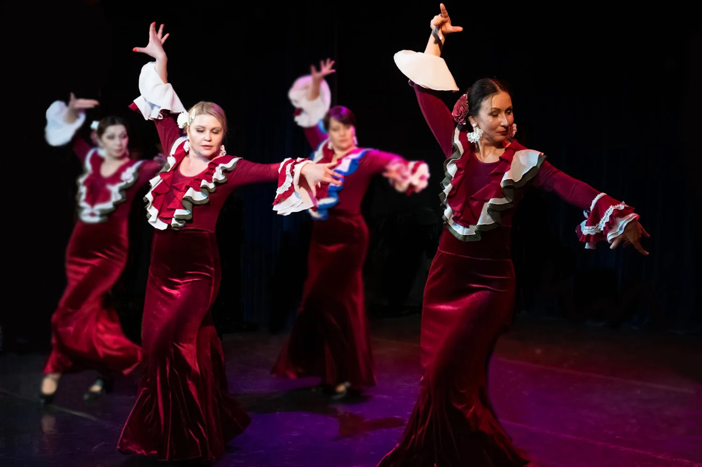

Афиша театра
Шоу танца фламенко
Сб / 19:30
Фольклорный центр «Москва»
Малый зал, ул. Барклая, 9
Цены и свободные места показывает билетный оператор.

О спектакле
Танец с характером
Лилия Сафина соединяет традиционные формы фламенко с современной хореографией. У каждого номера своя история — от комедии до драмы. На сцену выходят артистки театра и ученицы школы.
Анонс и фотографии театра